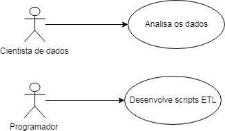
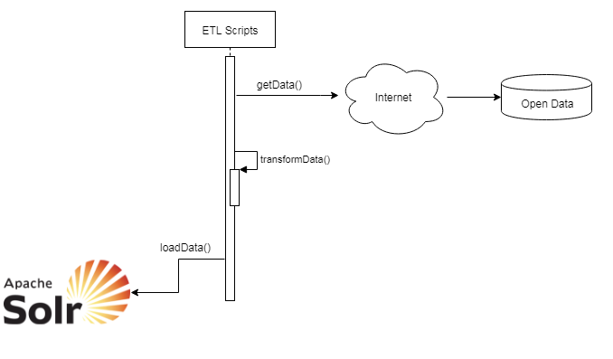

Utilização¶
Aqui considera-se que a aplicação como um todo esteja instalada e configurada, conforme descrito no documento … Para utilizar o sistema é necessário realizar dois processos: Análise de negócios e processos ETL Configuração da coleção de dados
Análise de negócios e processos ETL¶
Use-cases¶

Analisa os dados¶
Listar todos os campos que serão facets Listar os campos que serão buscáveis. Geralmente campos do tipo texto livre; esses não podem de maneira alguma serem facetados, porque sobrecarrega o mecanismo de facets (filtros).
Scripts ETL¶
Os script de ETL (extração, transformação e carga) executam essas etapas para realizar as atividades demonstradas no diagrama abaixo. Segue uma descrição das atividades de um modo geral, onde pode haver variação de caso para caso.
- Extração - Recuperação dos dados Estes dados podem estar em uma base de dados, em um portal da Intenet, etc.
- Transformação Duas transformações principais podem ser efetuadas nesta etapa:
- Normalização dos dados segundo regras de negócios Por exemplo, conversão de códigos de municípios, estado sexo etc para texto.
- Normalização dos dados para apresentação nas áreas e campos do front end (filtros, busca, gráficos etc). A maneira como os dados são apresentados exigem que os mesmos sejam indexados segundo regras do backend Solr. Essas regras são descritas na sessão … do documento …

Configuração das Collections¶
Para incluir uma nova collection no sistema é necessário realizar os processos de ETL acima descritos e configurar a collection.
A configuração de uma collection se dá em dois pontos:
Incluir a collection no grapho do sistema, no arquivo solr_front_conf.json
Criar um arquivo JSON para a collection a pasta
solr_front_conf.json¶
Incluir a collection no grafo:
- GRAPH - Objeto de listas Cada collection do sistema precisa ser registrada como um objeto de lista. A lista indica quais são as collections com quem ela se relaciona no grafo. A lista pode ser vazia ou não.
- EDGES - Objeto de objetos Além de registrar a collection o grafo, é necessário documentar as collections relacionadas (vértices). Caso a collection não tenha relacionamentos, o seu objeto deverá vazio.
.json¶
A página de análise do buscador possui vários elementos, como por exemplo:
- Mecanismo de busca
- Filtragem
- Gráficos dinâmicos
- Gráficos estáticos
- Totalizadores
- etc
Todos estes elementos devem ser configurados no arquivo json.